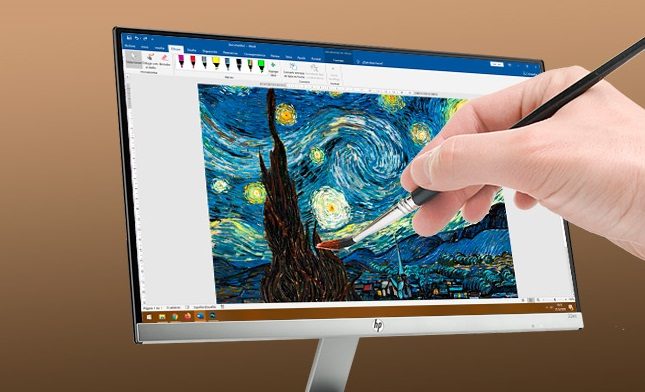

HERRAMIENTAS PARA CREAR Y EDITAR IMAGENES
PASOS PARA CREAR IMAGENES

- Para poder realizar la creación de imágenes, en primer lugar se debe seleccionar la aplicación que se desea utilizar.
- Una vez seleccionada la aplicación, es necesario registrarnos en ellas para crear una cuenta con la cual podamos ingresar.
- Luego de esto debemos hacer un recorrido general por el sistema para poder conocer cada herramienta que posee, esto ayudara a encontrar con facilidad las funcionalidades que serán necesarias para poder trabajar.
- En cada una de las aplicaciones se mostraran interfaces de usuario diferentes pero con herramientas muy parecidas para realizar las tareas.
- A continuación se muestran los tutoriales correspondientes para poder utilizar las aplicaciones localizadas en la sección de herramientas.
-
En el video se detalla a forma en la que se debe crear un usuario y nos muestra una breve introduccion a las plantillas de Adove Spark.
En el presente video se realiza un recorrido por las funcionalidades principales de la aplicación Canva y se muestra el uso de algunas de sus herramientas.
En el video se mustra el proceso de edicion de una imagen, en el cual se enseñan y dan a conocer algunas de las funcionalidades de Fotor.